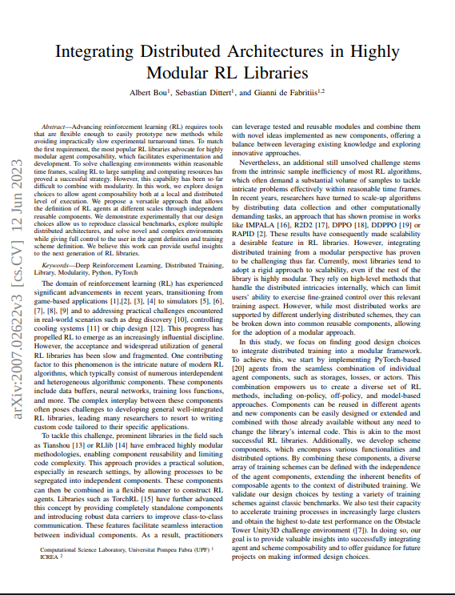

Projects & Highlights
Key contributions and research projects


Algorithm development, exploration strategies, and sample-efficient training methods
Reinforcement learning is my core research area. I focus on developing novel deep RL algorithms, improving exploration strategies, and building scalable training infrastructure. My work spans from foundational algorithm research to open-source library development, with contributions to PyTorch's official RL library and distributed training architectures.
Key contributions and research projects

Videos, demos, and visualizations